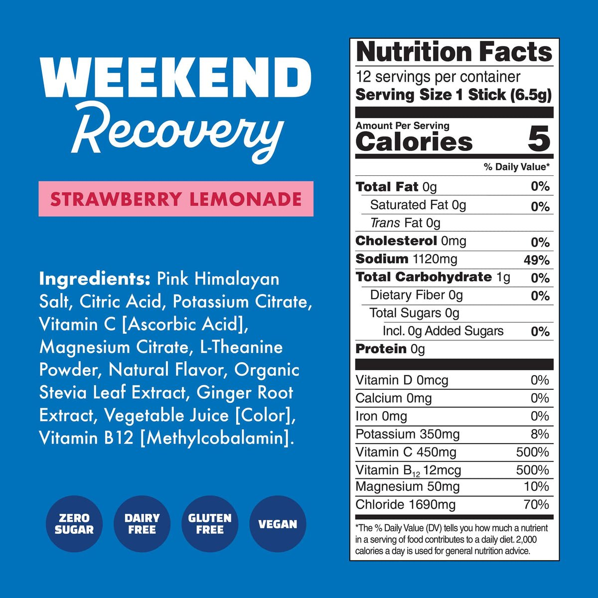

Same Wedding. Same Open Bar. Same 9 a.m. Brunch. Why One Friend Is Ordering Eggs and the Other Is Texting "Go Without Me."
It isn't tolerance and it isn't luck. It's a 30-second habit the trip planner packs for every big weekend, plus 6 more reasons it's in her carry-on.

Two friends. Same welcome drinks on Friday. Same open bar on Saturday. Same last song, same 1 a.m. ride back to the hotel.
Day three, 9 a.m., the farewell brunch.
One of them is ordering eggs, retelling the best man's speech and planning the next trip. The other is in sunglasses on a hotel bed, typing "go without me" to the group chat.
Think about what that second friend spent to be there. Between the flight, the hotel, the outfit and the gift, a wedding weekend can run past a thousand dollars. And the brunch, the pictures, the last morning with everyone in one place, that's the part people remember. Missing it is the most expensive hangover there is.
So what's the difference between the two friends? Same drinks. Same night. Same alarm.
The difference took 30 seconds, and it happened the night before.
Big weekends stack up. Two or three nights out in a row, short sleep, a hot afternoon outside, sometimes a flight home. Every morning after comes with its own bill. The first friend planned for the mornings, not only the nights. Here's what was in her bag.
She bookends every night: one stick before bed, one at breakfast
That's the 30 seconds. Before she goes to sleep, she tears open a stick of Waterboy Weekend Recovery and mixes it into a big glass of water. When the alarm goes off, one more with breakfast. Three nights out is six sticks, half a pouch.
| Nights out | Sticks per person |
|---|---|
| 1 | 2 |
| 2 | 4 |
| 3 | 6 (half a pouch) |
She knows water only pays back half
When you drink, your body lets go of more water than usual, and sodium, potassium and magnesium go with it. By morning you owe your body water and salt. Call it a salt debt, and a three-night weekend runs up three of them. Water pays back the water. Each Weekend Recovery stick carries 3,205mg of electrolytes, including 1,120mg of sodium, to pay back the rest.

It replaces a whole bag of fixes
Waterboy's founders, Mike and Connor, used to run a five-step routine after nights out: Pedialyte for electrolytes, raw ginger, an Emergen-C and L-theanine. Weekend Recovery puts that routine in one stick. One thing to pack instead of five. No pharmacy run on the way to the venue, no hunting for ginger in a hotel minibar.
It fits in a clutch
The sticks are slim and flat. They go in a clutch, a jacket pocket, a fanny pack at a festival or the side pocket of a carry-on. Pack the morning stick where you'll see it first: next to your phone charger or on top of your toiletry bag.
Zero sugar and no caffeine, so she can have one at 1 a.m.
After a weekend of cake, cocktails and late-night pizza, the last thing anyone needs is another sugar drink. Weekend Recovery has 0g sugar, a little organic stevia, and no caffeine, so the before-bed stick is an easy one.
There's enough for the whole group
A pouch has 12 sticks. The Sample Pack comes with five flavors, so the group can fight over Strawberry Lemonade and Blue Raspberry instead of fighting over who booked brunch for 9 a.m. Splitting it for a bachelorette of six with two nights out? That's 24 sticks, so two pouches, and two pouches ship free.

People already pack it for trips
Weekend Recovery has 10,497 reviews on waterboy.com, averaging 4.7 stars. A few from people who pack it:
Took these with me to a weekend long festival
I won't go on vacation without it
Helped keep me going on a long weekend of walking, rides, and drinking.
It is amazing. We took it on vacation to help with hydration since we were in the ocean and pool all day.
Individual experiences vary.
Day three, 9 a.m.
Picture the farewell brunch. Half the table is in sunglasses. The friend who planned the trip mixed one stick before bed and one when the alarm went off, and now she's passing the pouch down the table like it's the bread basket. Nobody asks what it is twice.
Be the one passing the pouch.
One honest note
It tastes salty, on purpose, because 1,120mg of sodium is the point. Mix it into a bigger bottle for a lighter taste. And it's not a miracle: as the founders put it, it's "a much better way to feel less shitty for $2." It can't undo the weekend. It puts back what the weekend took. It's about $2 a stick ($2.08 one time, $1.67 subscribed), so a two-night weekend runs about $6.68 to $8.32 a person. Less than one cocktail at the hotel bar.

Pack Weekend Recovery
- One stick before bed, one at breakfast
- 3,205mg electrolytes, 0g sugar, no caffeine
- Slim sticks for a clutch or carry-on
- Skip, change or cancel by text
- Two pouches ship free (orders of $35.99 or more)
Questions
How many should I bring?
Two per person per night out: one before bed and one at breakfast. A 12-stick pouch covers one person for six nights out, or a couple for a three-night weekend.
How long does shipping take?
Orders usually process in 1 to 2 business days, then take about 4 to 6 business days to arrive. So order at least a week and a half before you leave.
Isn't this just salt water?
Mostly salt, on purpose. That's the part water can't cover. Each stick also has ginger root extract, L-theanine and vitamins C and B12, with zero sugar.
Is that much sodium OK?
Each stick has 1,120mg of sodium. If you watch your sodium, are pregnant or have a health condition, check with your doctor first.